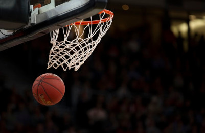
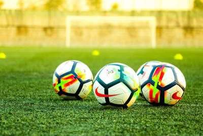

Bem-vindo ao meu primeiro site relacionado à esportes!
Esse site não passa de um protótipo para meu próprio aprendizado, pelo menos por enquanto 😉.
Nele veremos notícias sobre alguns dos principais esportes, dentre eles:
Para acessar a página de notícias basta clicar no respectivo esporte presente na lista acima.
Mas antes de começar quero te apresentar algumas características importantes de cada uma dessas modalidades para que você saiba diferenciá-las:
Basquete

Objetivo
Basquete é um esporte onde duas equipe se enfrentam, cada equipe com 6 jogadores em quadra, com o objetivo de arremessar a bola por entre o aro (onde o aro está preso, chamamos de tabela) do cesto no lado do time adversário.
Algumas regras
- A equipe que fizer o maior número de cestas vence a partida.
- Os pontos vão de 1 até 3 e dependem do local que foi feito o arremesso. Lances próximos à linha de três marcam 3 pontos no placar.
- O jogo é dividido em 4 tempos de 10 minutos.
- O jogador não pode dar mais de dois passos com a bola nas mãos.
- Os passes podem ser: passe com a mão, passe de peito, passe picado, passe de ombro e passe por cima da cabeça.
Futebol

Objetivo
O futebol é um esporte onde duas equipes compostas de 11 jogadores cada disputam uma partida com o objetivo de marcar o maior número de gols possível.
Algumas regras
- O campo de grama tem 105 metros de comprimento por 68 metros de largura.
- Jogadas violentas podem ser punidas por cartões amarelos (advertência) e vermelho (expulsão).
- O jogo é dividido em 2 tempos de 45 minutos cada, totalizando 90 minutos. Porém as pausas no meio do jogo são repostas através dos acréscimos no final de cada tempo.
- Em fases eliminatórias, existem as prorrogações que são feitas em caso de empate no tempo normal e são compostas por 2 tempos de 15 minutos cada. Caso ainda continue empatada a partida, os times fazem a disputa de pênaltis.
- Os goleiros são os únicos que podem jogar com as mãos (dentro de suas respectivas áreas somente).